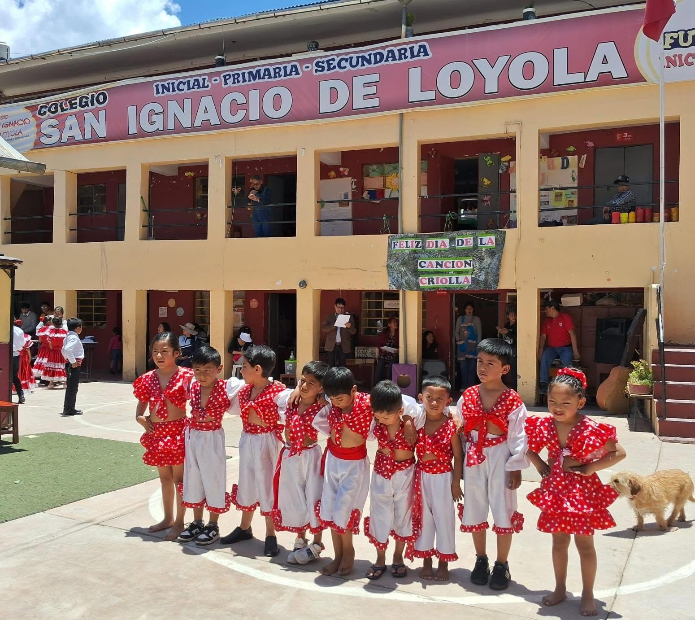

Arte y Cultura

📅 31 de Octubre, 2026 • Nivel Inicial y Primaria
Celebración del Día de la Canción Criolla y Festidanza Escolar
Nuestros pequeños estudiantes de los niveles inicial y primeros grados de primaria presentaron números artísticos de marinera y festejo criollo en el patio central del colegio, revalorando nuestra identidad musical peruana.
Ver galería fotográfica →